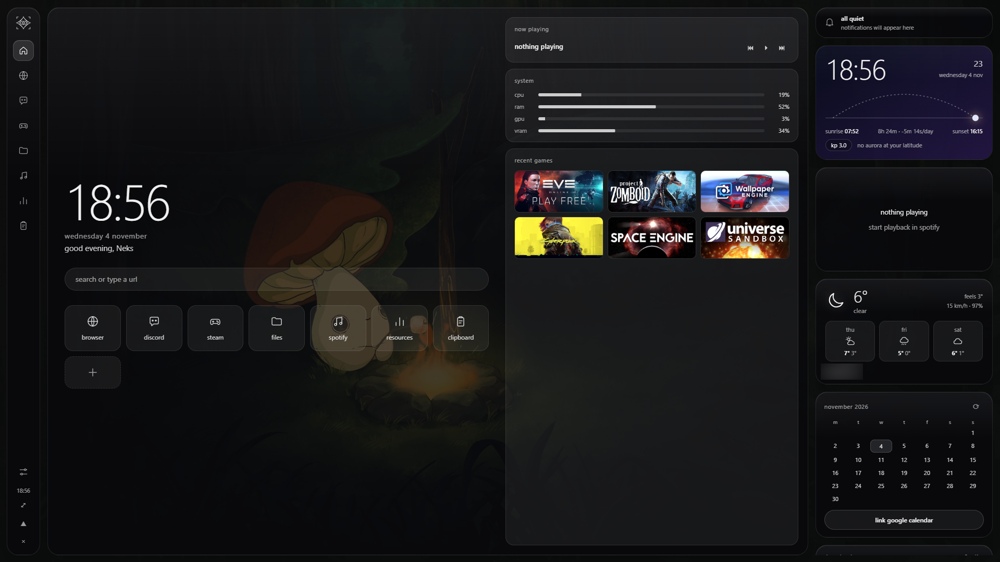
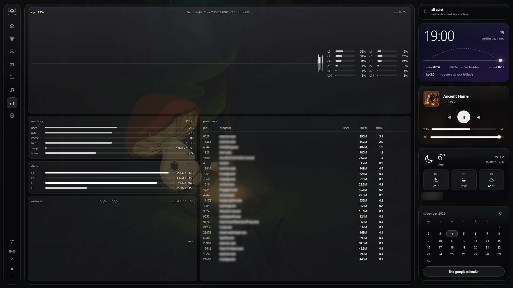
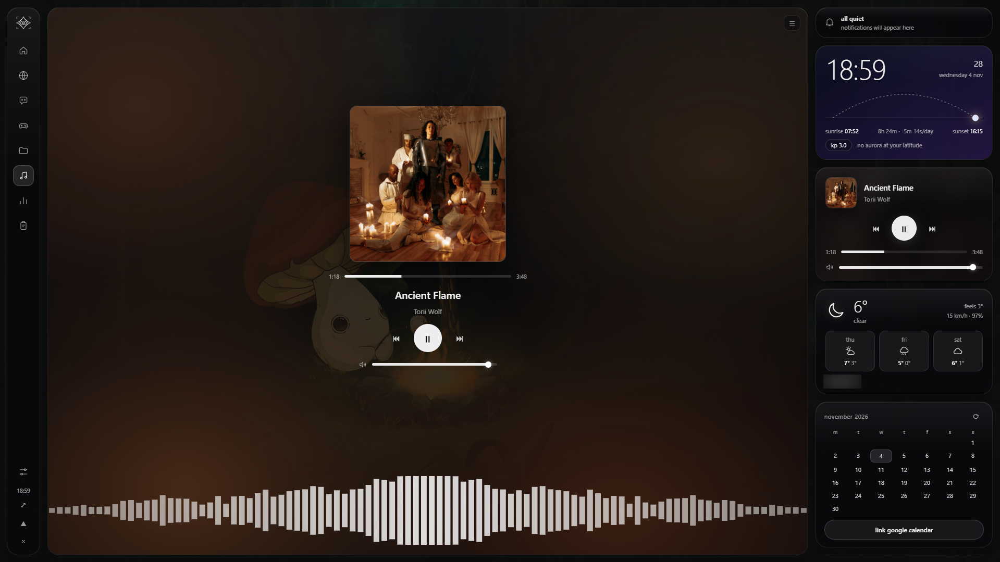
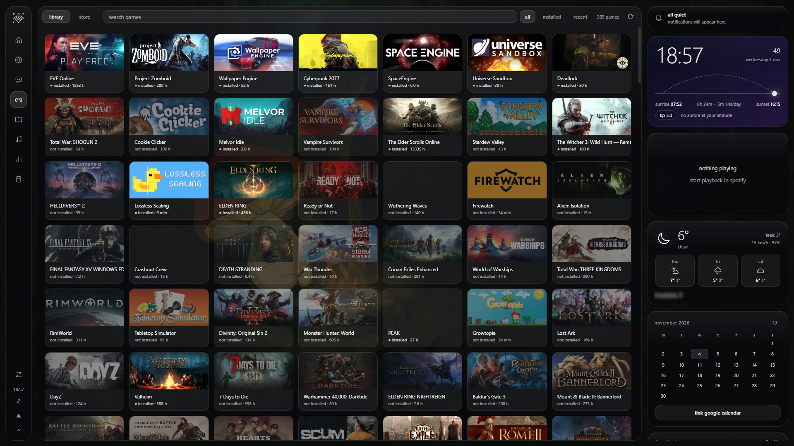
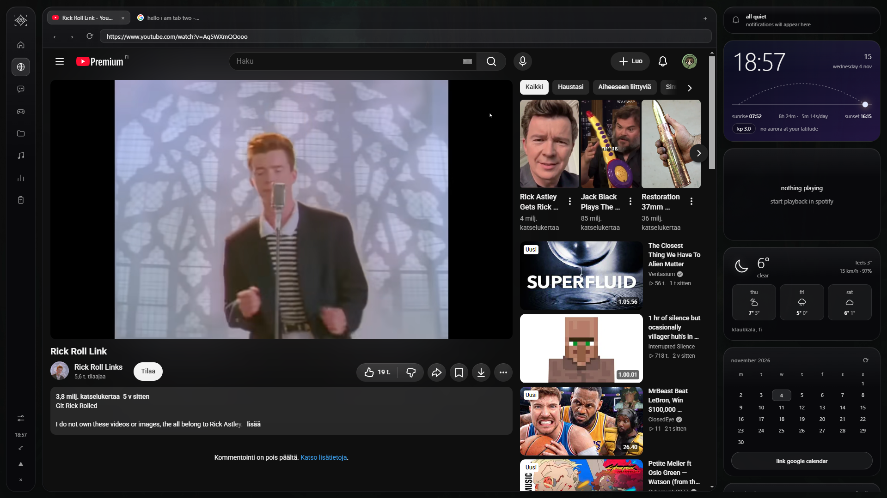

argus
don't you just hate alt-tabbing? switching to spotify, back to the game, missing the discord notification because you were on the steam store, opening task manager because something is loud and you don't know what it is. it's a lot of window management for stuff that should just... be there.
no? oh, that's fine. it's not that bad. but wouldn't it be nice to have everything you actually look at — browser, chat, music, files by size, cpu/ram/gpu, weather, calendar, clipboard — in one neat glassy interface that sits on your second screen and stays there? not a window you alt-tab to, just a layer that's always present. maybe even a file analyzer and a process monitor, in case you're the kind of person who opens task manager for fun.
if that sounds like something you'd use, read on. if it sounds like a gimmick, honestly, fair. close the tab.
two parts. part 1 is short — a trust check, what it is, setup. part 2 is the long, honest version: every network connection, every worst case, how to verify any program from the internet (including this one) without taking anyone's word for it.
part 1: tldr
use this if: you know me and trust me not to ship malware (hi, thanks), or you know your way around security and don't need the full explanation. everything you'd want to verify is in part 2. if you're the "just tell me if it's safe" type and don't have someone to ask to look at the source for you, honestly, part 2 is the way — it's not that long and it'll help you with every other program you install, not just this one.
what it is: a see-through desktop overlay for a second monitor. browser, discord, steam, spotify, files by size, cpu/ram/gpu, weather, calendar, clipboard history. one person's hobby project, version 0.9 (beta). free. bugs exist.
everything works without keys except spotify. no account, no telemetry, no argus server, no update pinger. it talks to a short list of services — the full list and what each one gets is in part 2.
the exe is unsigned, so smart screen says "windows protected your PC." that's a reputation warning, not a virus detection. if you're going to click through, please at least read the "the windows warning" section in part 2 first — it's two paragraphs and it explains exactly what you're clicking through.
the short version: run the installer. Ctrl+Alt+Space hides/shows. Ctrl+Alt+V opens clipboard history. Ctrl+Alt+F toggles fill-screen. gear icon in the dock is settings.
setup
- install: run
Argus Setup 0.9.0.exe. if asked, pick "just me." "for all users" installs toC:\Program Filesand makesconfig.jsonneed admin to edit. - hotkeys:
Ctrl+Alt+Spacehides/shows.Ctrl+Alt+Vopens clipboard history.Ctrl+Alt+Ftoggles fill-screen. change any of them withtoggleHotkey,clipHotkey,fillHotkeyinconfig.json. - settings: gear icon in the dock. name, city, units, search engine, calendar link, glass tint and blur.
- spotify: create a free app at developer.spotify.com/dashboard, add
http://127.0.0.1:8888/callbackas a redirect uri (exact match), put the client id inconfig.jsonas"spotifyClientId": "...", restart, click connect. - steam (optional): get a key at steamcommunity.com/dev/apikey, add
"steamApiKey": "...". steam id is auto-detected; otherwise add"steamId64". unusual install location: add"steamPath". - calendar (optional): google calendar → settings → your calendar → secret address in iCal format → paste in argus settings. read the calendar section in part 2 first.
- other options:
display,mode("window"for a normal window),width,height,clickThroughGaps,gpuStats,glassBlur(falseif slow),keepWebviewsAlive. - paths:
config.jsonlives next toArgus.exe—%LOCALAPPDATA%\Programs\argus\config.jsonif you picked "just me",C:\Program Files\argus\config.jsonif you picked "for all users" (that one needs admin to edit, which is why the install step says pick "just me"). settings, tokens, and clipboard history live in%APPDATA%\argus.
uninstall
settings → apps → argus → uninstall. then delete %APPDATA%\argus. it holds your settings, spotify token, clipboard history and saved images, and it does not delete itself. upside: reinstalling later brings everything back.
part 2: the real explanation
what is argus
in greek myth, argus was the hundred-eyed giant, set by hera to watch over everything. the epithet was panoptes, "the all-seeing." the myth does not end great for him, but the name is cool.
it's one transparent window with tiles for the stuff you actually look at. the gaps are really see-through: your wallpaper shows and clicks pass through. built with electron, tested on windows. the linux/mac branches exist but are untested, so treat them as unsupported.
┌───┐ ┌───────────────────────────┐ ┌───────────┐
│ d │ │ │ │ clock/sky │
│ o │ │ browser / discord / │ ├───────────┤
│ c │ │ steam / files / spotify │ │ spotify │
│ k │ │ / etc. │ ├───────────┤
│ │ │ │ │ weather │
└───┘ └───────────────────────────┘ ├───────────┤
│ calendar │
└───────────┘
who it talks to,
directly from your pc. this is the full list:
accounts.spotify.com,api.spotify.com(only if you connect spotify)api.steampowered.com(only if you add a steam api key)cdn.cloudflare.steamstatic.com(game cover images)geocoding-api.open-meteo.com,api.open-meteo.com(weather)services.swpc.noaa.gov(aurora / kp index)- your google calendar ics link (only if you paste one)
- plus whatever sites you open in the built-in browser, discord tab or steam store tab, same as any browser
who it does not talk to: me. there is no argus server. no telemetry, no analytics, no account, no update pinger. nothing is sent to the developer because there is nowhere to send it.
what it looks like




+browser tabclick to reveal

what is an api, what is a key
an api is a way for one program to ask another company's servers a question. a key or token is a password for a program instead of a person.
- your data doesn't go through me. it's
your pc → spotify,your pc → steam,your pc → open-meteo. i never see your keys, songs, games or city. - argus already has access to your pc, because it runs as you. keys are only for outside services. so the real trust question isn't "is the spotify key dangerous" (mostly not). it's "is this program honest." that's what the verification section is for.
what it stores on your pc, unencrypted, in plain files
- your settings, your spotify token, your clipboard history (text and images), your home-screen program list
- any api keys or ids you put in
config.json - logged-in sessions for the built-in browser, discord and steam store, like any browser's cookies
what it can do on your pc
scan folders and delete files you click delete on, end processes you click end on, read your clipboard, listen to system audio for the visualizer. it can because it runs as you.
service by service
tap one to open it. each lists what's sent, what's stored, the realistic worst case, and how to revoke.
+spotifyoptional
- does
- shows what's playing, play/pause/skip/seek/volume, lists and starts playlists. playback control needs premium (spotify's rule).
- login
- you make a free app on spotify's developer dashboard and paste its client id into
config.json. your browser opens spotify's own login page; your password never touches argus. uses PKCE, which exists so no secret is needed. the client id is not a password. - asks for
- read playback state, control playback, read currently playing, read private and collaborative playlists. no email, payment info or account settings.
- stored
- access and refresh token in
spotify.json, plain text. - worst case
- someone with that file can see what you play, see your playlists and control playback until you revoke. they can't log in, change your password or see your card.
- revoke
- spotify.com → account → apps → remove argus. delete
spotify.json. - local
- during login, a tiny server briefly listens on
127.0.0.1:8888(your machine only) to catch the redirect. closes after login or two minutes.
+steamkey optional
- no key
- reads steam's local files (
appmanifest_*.acf,libraryfolders.vdf,loginusers.vdf) to list installed games, detect your steam id and show download progress (polled every 3 seconds). clicking a game opens asteam://link. - with key
- full library with playtime via
GetOwnedGames. your profile's game details must be public. key fromsteamcommunity.com/dev/apikey, stored inconfig.json. - worst case
- a leaked key lets someone make steam web api requests under your name. it can't log in, buy, trade or touch your inventory. realistic harm is a banned key. your 17-digit steam id is public anyway.
- covers
- cover art loads from
cdn.cloudflare.steamstatic.com, so valve's cdn sees image requests from your ip for the games shown. that's the one place your game list leaks without a key. - store tab
- if you log into the steam store inside argus, your steam account session cookies are stored in that webview. that's worth more than a spotify token. treat it like a browser login.
- revoke
- same api key page. for the session, sign out inside the tab or delete
%APPDATA%\argus.
+weather (open-meteo)on by default
- sends
- the city name you typed (to geocode it), then its coordinates for the forecast. no key, no account.
- they see
- your ip and the city you chose. city coordinates, not your house. pick a bigger nearby city if you care.
- worst case
- they know roughly where you are or what city you care about. small, reputable, open source, nothing sensitive.
- note
- a default city (helsinki) is pre-filled. change it in settings.
+aurora (noaa)on by default
- does
- downloads a public json of the planetary kp index from a us government space weather service. then locally compares it with your weather city's latitude to guess if aurora is likely.
- they see
- a normal web request from your ip. your location is not sent.
- worst case
- nothing meaningful. the math is a rough heuristic, not a forecast.
+calendar (google ics)most sensitive
- does
- downloads your calendar file at most every ten minutes and shows events plus dots on a month grid. read-only.
- important
- the "secret address in iCal format" lets anyone holding it read your entire calendar, no login. titles, times, locations, descriptions, attendees. stored in plain text in
settings.json. - worst case
- if the link leaks (screenshot, shared settings file, malicious program), someone can read your calendar until you reset it.
- revoke
- google calendar → settings → your calendar → integrate calendar → reset secret address. the old link dies instantly.
- optional
- if you don't want this risk, don't link it.
+browser, discord, steam store tabswebviews
- what
- embedded chromium webviews. they talk to whatever you open and keep cookies and logins in separate storage for browser, discord and steam.
- discord
- argus doesn't read or touch discord's content. it's just discord's web app in a window.
- identity
- the browser says it's firefox on purpose, because some sites (discord login) behave better.
- search
- duckduckgo by default. pick google, bing, brave, startpage, ecosia or your own url in settings. whichever you pick sees your searches.
- worst case
- same as any browser: malicious sites, phishing. argus adds no protection beyond chromium. not a hardened browser.
things that never leave your pc (but argus can do)
no network side, but a trust-me readme that left them out would be dishonest.
- clipboard history. every 0.8 seconds it saves text and images to
clipboard.jsonand aclipsfolder, unencrypted. keeps up to 150 items (30 images), skips anything over 100k characters, skips items password managers mark private. if you copy a password from somewhere that doesn't mark it (a notes file, a web page), it is saved in plain text. pause and clear buttons exist; pinned items are never auto-deleted. - process ending. two clicks per kill, a protected list (system, lsass, svchost, etc.), refuses to end itself, and can only end what your user can end.
- file analyzer. measures sizes in the folder you pick. only changes files when you click
bin(recycle bin) or confirm "delete permanently," and only inside the scanned folder. - music visualizer. the first time you open the spotify tab, argus silently starts a screen capture (video + system audio). there is no permission dialog because the app auto-approves it. the video track is dropped instantly; only audio is analyzed in memory to draw bars. nothing is recorded or sent. it stops when you close the app.
- temp files. each launch writes
argus-index.htmlandargus-preload.jsto your temp folder. that's the whole interface. - no auto-start, no service. as far as the code goes it doesn't register to start with windows, install a service or driver, or need admin to run.
so what's the actual worst case
- with the keys: someone sees what you play, reads your calendar (if the link leaks), or abuses your steam key. annoying, revocable in a minute, not financially or identity-critical.
- if the program were malicious: a hostile program running as you could read your files, clipboard and logged-in sessions and send them out. true of any program you run. the only protection is knowing it is what it claims to be.
the windows warning
"Windows protected your PC: SmartScreen prevented an unrecognized app from starting." a reputation score, not a virus detection. a file lots of people ran is trusted; a file 30 people ran is "unrecognized." the fix is a code signing certificate, which costs hundreds of euros a year. this is a free hobby project, so the warning stays.
an unsigned exe from a stranger is exactly what malware looks like from outside, so don't click through on anything you haven't checked. if you're happy with it: More info → Run anyway. windows usually remembers that choice for that file.
how to check any random program
no single check proves a program clean. each catches a different problem. none of this is specific to argus.
1read or build the sourcestrongest
source: github.com/Neks-Git/Argus. building it yourself means you don't need to trust my exe at all. the source is a single main.js, a package.json, two icons, and a config example — nothing else. same repo, clone it and run npm install && npm start.
the lazy version, and it's genuinely good: it's 2026. paste the whole source tree into an llm. throw it into a couple of them, for free — deepseek, chatgpt, claude — and ask if anything looks sus: network calls, file writes, anything that phones home, anything that runs another program. you can even ask it how to run the damn thing, step by step, on your exact os. it won't prove the code is clean, but it's fast, it catches the obvious stuff, and it costs nothing. two models agreeing there's nothing weird is a decent signal; two models pointing at the same line is a reason to stop and look closer.
git clone https://github.com/Neks-Git/Argus cd Argus npm install npm start
search for what matters: fetch( (every request), execFile / child_process (runs programs), shell.openExternal, fs.promises.rm / shell.trashItem (delete paths), clipboard.readText / readImage, writeFileSync (what hits disk). every fetch( should point at a host in the "who it talks to" list above.
2check the signature
Get-AuthenticodeSignature .\ArgusSetup0.9.0.exe | Format-List
NotSigned is expected for argus. for a program claiming to be from a big company, NotSigned or an odd publisher is a red flag.
3scan with defender
right-click → scan with microsoft defender, or:
Start-MpScan -ScanType CustomScan -ScanPath "C:\path\to\the\folder"
one layer. scanners only know known bad things; new custom malware can pass.
4watch what it connects tobig one
this directly tests "it only talks to these hosts."
- resource monitor:
Win+R→resmon→ network → tcp connections. electron runs several processes with the same name, so check all of them. - tcpview (sysinternals): live connections per process with remote addresses.
- wireshark: filter
dnsto see hostnames looked up. - per-app firewall (simplewall, portmaster, glasswire): shows or blocks per program.
start argus with no keys and no calendar. expect open-meteo, noaa and steam's image cdn, plus maybe stray windows certificate checks. a bare ip you can't explain, a domain not on the list, or lots of data going out from a weather widget is a reason to stop. https hides contents, so you see who and how much, not what. another test: add an outbound block rule and see which features break; each one maps to a connection.
5watch what it does to your system
- process monitor: every file, registry and process action. filter by name; look for writes outside its folders or launching other programs.
- autoruns: run before and after installing and compare. new startup entries, services or tasks are a classic malware sign.
- process explorer: has a "check virustotal" option for running files.
6run it somewhere disposable
- windows sandbox (pro/enterprise/education): a throwaway windows wiped on close. you can switch networking off.
- a virtual machine: virtualbox, hyper-v, vmware. more setup, same idea.
- a separate non-admin windows user with none of your logins: a cheap middle ground.
7general red flags
- wants admin and can't say why
- installs a service, driver, extension or startup entry you didn't ask for
- connects to raw ips or lots of unrelated domains
- downloads and runs another exe after install, or bundles "offers"
- no source, website or history, but asks for logins or payment info
- tells you to turn off antivirus. never do this.
- came from a dm, a comment or a "cracked" site
if you ran something and feel uneasy
- disconnect from the internet, run a full defender scan, then a second-opinion scanner such as malwarebytes
- change important passwords from a different, clean device and turn on 2fa
- sign out of all sessions that matter (discord, google, steam, spotify)
- revoke any tokens or keys you gave it (revoke steps above)
- check browser extensions you don't recognize (
chrome://extensions,edge://extensions,about:addons) - if it's serious, reinstalling windows is the only way to be fully sure
why all of this
that was a lot of scary-sounding text. the reason: i'm into device security, privacy and threat modeling as a hobby, and most software you install already has the same access as argus; nobody writes it down. your browser can read every file you upload. discord can see your screen in a screenshare. a game launcher's install button is a program running as you.
i could have written "free hud, it's cool" and let you click through smartscreen with no context. that's what most hobby projects do, and it trains people to click through warnings, which is how malware gets installed. so i wrote the version i'd want from a stranger: everything it can do, every service it talks to, laid out up front.
i can't convince you, so i won't try. i can publish source, a hash, a repo, and a determined adversary could fake any of it. "trust" is what you do when verification is impossible. so the readme gives you the facts and the tools, and you decide. if you're not comfortable, don't install it. that's a fine outcome.
how you probably got here: you followed a link from my discord or profile (hi); i asked you to beta test (thanks for the patience with bugs); or someone else sent it, in which case check with them, because you know them and not me.
last thing
this is 0.9 (beta) of a hobby project, not a product. some things will be janky. if a button does nothing, i probably forgot to test it. report bugs here: github.com/Neks-Git/Argus/issues.
i built it because i wanted a glassy hud on my second monitor, and figured others might too. if you read all this and decide not to run it, that's a completely reasonable call, and the checks above will serve you for every other program you download.
neks